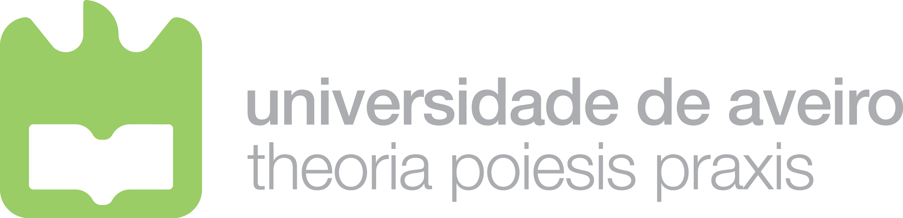
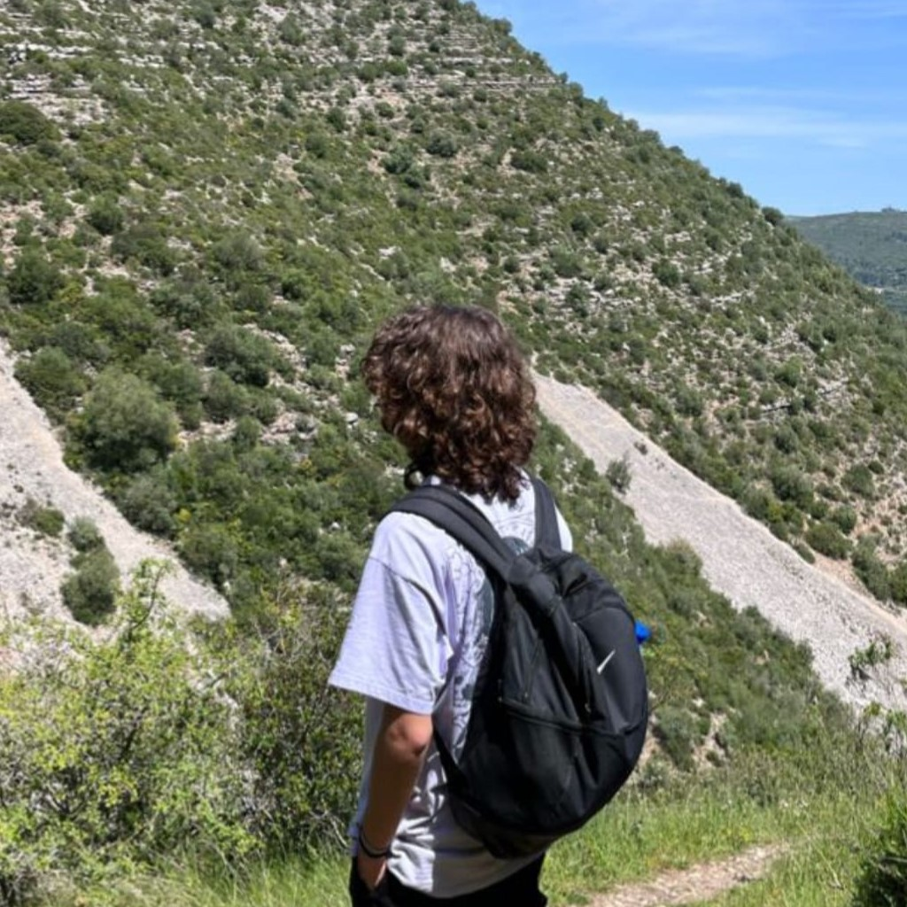
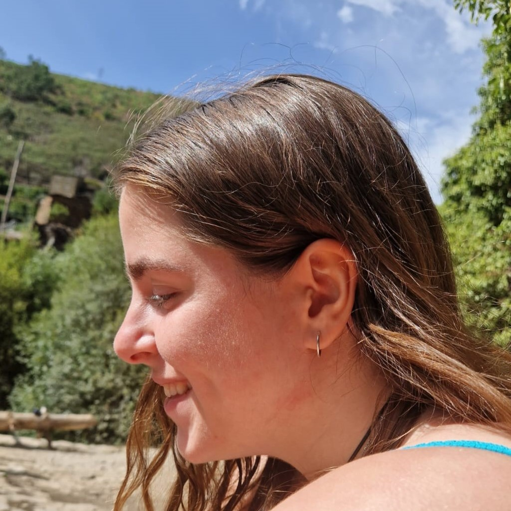

Sobre nós
Algumas informações sobre o projeto e os seus autores.
Este projeto foi realizado no âmbito da cadeira de Introdução à Engenharia Informática na Licenciatura em Engenharia de Computadores e Informática da Universidade de Aveiro.

Autores e as suas contribuições

Hey, chamo-me Dinis e sou caloiro na UAveiro.
Fui o responsável pela página do about, pelas páginas tanto da conclusão como do "EEG & ET". Para além disso construí o roda pé e junto com a Joana fiz a página de transição para os diferentes temas tanto como a fui ajudando com tudo o que precisasse ao longo do trabalho. (50%)

Olá, chamo-me Joana e sou caloira na UAveiro.
Fui a responsável pelo index do website, pelas páginas da "EEG" e da "ET". Para além disso construí a "navbar" e junto com o Dinis fiz a página de transição para os diferentes temas tal como o ajudei em qualquer coisa que precisasse. (50%)
Mais algumas informações

Em caso de as imagens aparecerem cortadas, os botões da página pessoal do github nos cards não aparecerem, utilize 75% de zoom nas páginas
Bibliografia
Websites consultados como fontes para o trabalho:
EletroencefalografiaJogos sérios, EEG e Neurociências: novas possibilidades.
Paralyzed man plays video games using brain.
Eye tracking.
Eye tracking e EEG podem ajudar a compreender a leitura!.
Benefícios Eye tracking em pesquisas.
Real-Time Control of a Video Game Using Eye Movements and Two Temporal EEG Sensors.
EEG-triggered dynamic dificulty adjustment for multiplayer games.
Benefícios Eye tracking em pesquisas.
Websites consultados para a criação do website:
w3schools.comBootstrap5.3
ChatGPT
Stack Overflow
Font Awesome